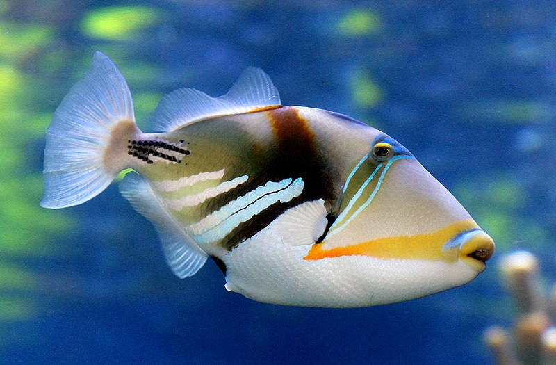
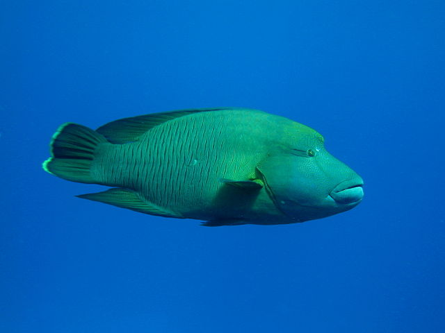
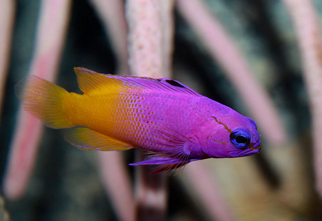

Picasso Triggerfish live in the reefs and sandy areas of coral reefs, where they eat just about anything that comes along, mostly including invertebrates and reef algae. They are always restlessly swimming around and vigorously protect their territory against intruders, including divers, especially when guarding their eggs during reproduction season
Humphead Wrasse Males, typically larger than females, are capable of reaching up to 2 meters and weighing up to 180 kg, but the average length is a little less than 1 meter. Females rarely grow larger than one meter. This species can be easily identified by its large size, thick lips, two black lines behind its eyes, and the hump on the foreheads of larger adults.
Royal Gramma can be a light purple to a deep `violet starting at the head which fades mid-body to a golden yellow at the tail. The royal gramma will also have a small black spot on the front of the dorsal fin and a black line that streaks through the eye. This fish is also a cleaner fish. It removes the ectoparasites (a parasite that lives on the skin of a fish)
